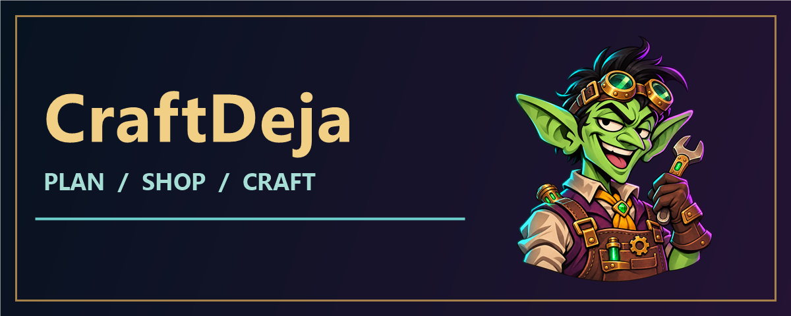
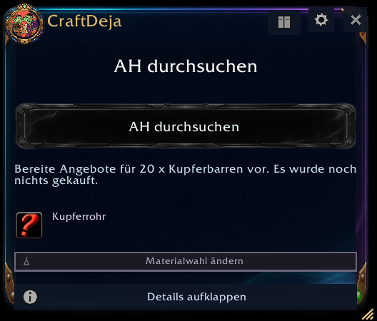
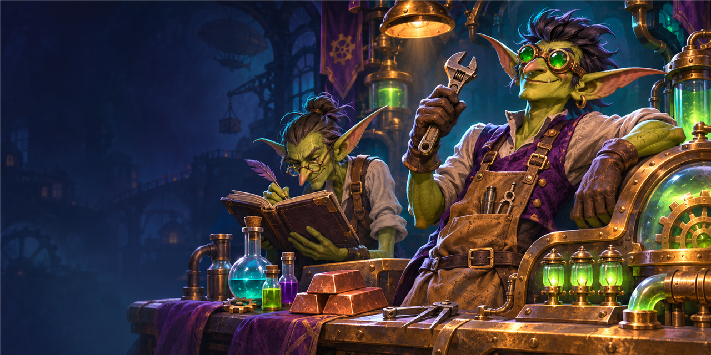
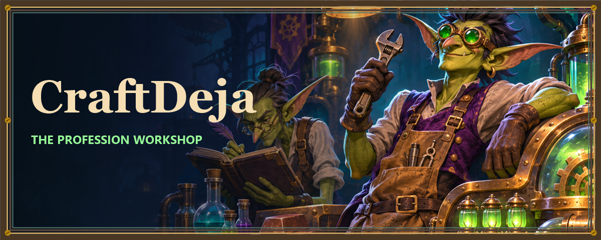

CraftDeja auf CurseForge
Vier Entwürfe zum Vergleichen. Die eingebetteten Vorschauen zeigen jeweils den schmalen Einstieg. Die vollständigen Seiten lassen sich separat öffnen.
A · The quick overview

Level WoW Forever professions with price-aware routes, recipe sources, shopping lists and a guide that shows your next craft.
Desktop · Schmal · Summary · Editor-Text · Medien
B · One order in play

Follow a WoW Forever profession order from auction house and mailbox to vendors and crafting, with quantities at each step.
Desktop · Schmal · Summary · Editor-Text · Medien
C · The goblin workshop

Run your WoW Forever workshop with cost estimates, profession routes, recipe sources and consumable restock targets.
Desktop · Schmal · Summary · Editor-Text · Medien
D · The profession workshop

Level WoW Forever professions with price-aware routes, recipe sources, shopping lists and a guide that shows your next craft.
Desktop · Schmal · Summary · Editor-Text · Medien